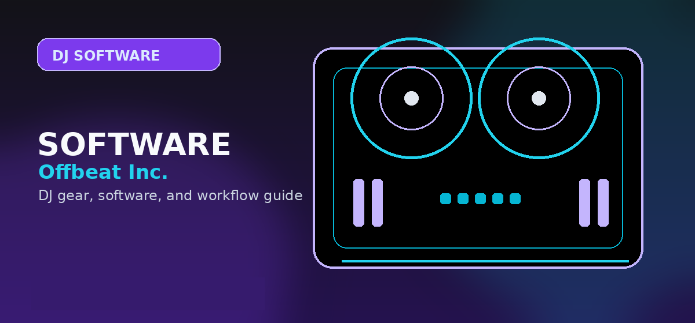

Best Music Production Software 2026: The Ultimate DAW Guide for Producers
Comprehensive guide to best music production software 2026 with practical recommendations and current buying notes — updated 2026.

Disclosure: This page uses affiliate links. We may earn a commission at no extra cost to you. Full disclosure →
Entering the music production landscape in 2026 means navigating an era where AI-assisted composition and cloud-based collaboration are no longer luxuries—they are standards. Whether you are scoring a cinematic epic, crafting a viral techno hit, or producing a polished hip-hop album, your Digital Audio Workstation (DAW) is the heart of your studio. The right software doesn't just record sound; it shapes your creative workflow and dictates how quickly you can move from a raw idea to a mastered track. With the current market split between "loop-based" creativity and "linear" precision, choosing the wrong tool can lead to frustrating bottlenecks. In this guide, we break down the top contenders for 2026, analyzing their unique strengths, pricing models, and suitability for different genres to ensure your investment aligns with your sonic ambitions.
Ableton Live: The Electronic Powerhouse
Ableton Live remains the gold standard for electronic music and live performance in 2026. Its unique "Session View" allows producers to sketch ideas and launch clips non-linearly, making it an unparalleled tool for improvisation. The latest updates have deeply integrated AI-driven MIDI generators and advanced warping capabilities, allowing you to stretch audio with zero artifacts. While the learning curve can be steep for those used to traditional tape-style recording, the efficiency of its workflow is unmatched for EDM, House, and Techno.
Price: $449 (Standard) / $749 (Suite)
✅ Pros
Best-in-class warping, seamless live integration, massive Max for Live community.
❌ Cons
Higher price point, less intuitive for traditional multi-track recording.
FL Studio: The Beatmaker’s Choice
FL Studio continues to dominate the hip-hop and trap scenes due to its legendary step sequencer and the most intuitive piano roll in the industry. For many, the primary draw remains the "Lifetime Free Updates" policy—once you buy it, you own every future version. In 2026, FL Studio has streamlined its mixing console and improved its recording workflow, narrowing the gap with linear DAWs. It is the ideal choice for producers who prioritize rapid melodic sketching and drum programming over complex live instrument tracking.
Price: $99 (Fruity) / $299 (Producer) / $499 (All Plugins)
✅ Pros
Lifetime free updates, industry-leading piano roll, fast drum programming.
❌ Cons
Playlist organization can become cluttered in large projects.
Logic Pro: The Apple Ecosystem Standard
For Mac users, Logic Pro offers the most comprehensive "out-of-the-box" experience. It provides a professional-grade suite of compressors, EQs, and a massive library of synthesized sounds and loops for a fraction of the cost of its competitors. The 2026 version leverages Apple Silicon to run incredibly lean, allowing for hundreds of tracks without CPU spikes. While it lacks the non-linear flexibility of Ableton, its linear arrangement tools are world-class, making it the go-to for singer-songwriters and film composers.
Price: $199 (One-time purchase)
✅ Pros
Incredible value, deep integration with macOS, professional stock plugins.
❌ Cons
Exclusive to Apple hardware.
Studio One & Cubase: The Mixing Workhorses
For those prioritizing surgical precision and high-end mixing, PreSonus Studio One and Steinberg Cubase are the professional's choice. These DAWs excel in linear recording, offering advanced routing, sophisticated VCA faders, and superior MIDI editing for orchestral work. Studio One, in particular, has gained ground with its "Drag-and-Drop" philosophy, which removes the menu-diving common in older software. These are the tools of choice for studio engineers who need to handle massive session files with absolute stability.
Price: $299 - $599
✅ Pros
Superior mixing tools, high stability for large sessions, professional routing.
❌ Cons
Less "playful" for initial songwriting/sketching.
2026 DAW Comparison Table
| Software | Best For | Key Strength | Price Range | Learning Curve |
|---|---|---|---|---|
| Ableton Live | EDM / Live Sets | Session View & Warping | $449 - $749 | Medium |
| FL Studio | Hip-Hop / Trap | Step Sequencer | $99 - $499 | Low |
| Logic Pro | All-rounder / Mac | Value & Stock Library | $199 | Low |
| Studio One | Mixing / Mastering | Workflow Efficiency | $299 - $599 | Medium |
Quick Verdict
- Best for Electronic Music: Ableton Live. Its clip-launching workflow is essential for modern dance music.
- Best for Beatmaking: FL Studio. The fastest path from a drum idea to a full loop.
- Best Budget/Value: Logic Pro. Unbeatable feature set for under $200.
- Best for Professional Studios: Studio One. Built for precision mixing and massive track counts.
Final Thoughts: Completing Your Studio
Choosing the right DAW is only the first step. To truly bring your productions to life, you need the right hardware and a strategy for distribution. For high-quality monitors and interfaces that complement these DAWs, check out the curated gear at DJ Tech Direct and DJ-Extensions. Once your tracks are polished and mastered, don't let them sit on a hard drive; use RouteNote to distribute your music to Spotify, Apple Music, and TikTok globally.
Ready to start producing? Click the links above to gear up and get your music heard!
Bottom line: Ableton Live 12 Suite is the best music production software overall -- unmatched live performance, Max for Live, industry-standard clip view. For beatmakers on a budget, FL Studio Producer Edition with lifetime updates is the smartest long-term buy. Check Ableton on Amazon →
Shop on Amazon
Upgrade your music production setup — MIDI controllers and interfaces on Amazon.
Reaper: The Budget Professional's Secret
Reaper has cemented its place in 2026 as the most efficient DAW for power users. Unlike its competitors, it is incredibly lightweight, allowing it to run on almost any hardware without the bloat found in larger suites. Its "unlimited track" capability and scriptable interface make it a favorite for sound designers and engineers who prioritize performance over pre-installed loops.
Pro Tip: Reaper's licensing model is one of the fairest in the industry. If you are starting on a budget, this is the most professional-grade software you can buy for under $100.
GarageBand: The Essential Entry Point
Do not underestimate Apple’s entry-level offering. In 2026, GarageBand serves as the perfect training ground for Logic Pro. With its intuitive "Smart Controls" and seamless integration with iOS devices, you can sketch ideas on an iPad and finish them on a MacBook Pro. It is arguably the best free software for beginners to learn the fundamentals of arrangement and MIDI.
Quick Verdict: Which should you choose?
- The Electronic Producer: Choose Ableton Live for its unmatched Session View workflow.
- The Hip-Hop Beatmaker: FL Studio remains the king of the piano roll and fast-paced sequencing.
- The Mac Power User: Logic Pro is the best value-for-money, period.
- The Technical Engineer: Reaper offers the most customization and lowest CPU overhead.
Frequently Asked Questions
What is the best music production software for beginners in 2026?
GarageBand (free on Mac) is the best starting point for beginners — zero cost, professional features, and direct upgrade path to Logic Pro. Windows beginners should start with FL Studio Fruity ($99, lifetime updates) or Cakewalk by BandLab (completely free). Ableton Live Intro ($99) is best if you want to understand loop-based electronic music production from day one.
How much does professional music production software cost?
Entry-level paid DAWs run $99–$199 (FL Studio Fruity, Ableton Live Intro). Mid-tier professional software costs $199–$499 (Logic Pro $199, Ableton Live Standard $499, FL Studio Signature $299). Top-tier subscriptions like Pro Tools run $299/year. Budget $200–$500 for a production-grade setup including a basic plugin bundle.
Do I need a powerful computer for music production?
Minimum: quad-core CPU, 8GB RAM, SSD storage. Recommended: 6-core+ CPU, 16–32GB RAM, 512GB SSD. Large sample libraries (Kontakt, Superior Drummer) are the biggest resource consumers. Most modern computers (post-2020 laptops) handle 50+ audio tracks without issue. Apple M1/M2/M3 chips are exceptionally efficient for audio workloads.
What plugins do professional music producers use?
Serum (wavetable synth, $189) and Omnisphere (synthesis, $499) are the most-used soft synths in professional productions. FabFilter Pro-Q 3 (EQ, $179) and iZotope Ozone (mastering, $199/year) are mixing/mastering staples. Plugin Alliance and Waves bundle popular channel strip emulations. Most DAWs include competitive stock plugins that are sufficient for years of learning.
Is music production software subscription or one-time purchase?
Both models exist. One-time purchase: Logic Pro ($199), FL Studio ($99–$299 with lifetime updates), Reaper ($60 discounted). Subscription: Pro Tools ($299/year), Ableton Live upgrades (paid separately), iZotope plugins. For budget-conscious producers, one-time purchase DAWs with lifetime update policies (FL Studio, Reaper) offer the best long-term economics.